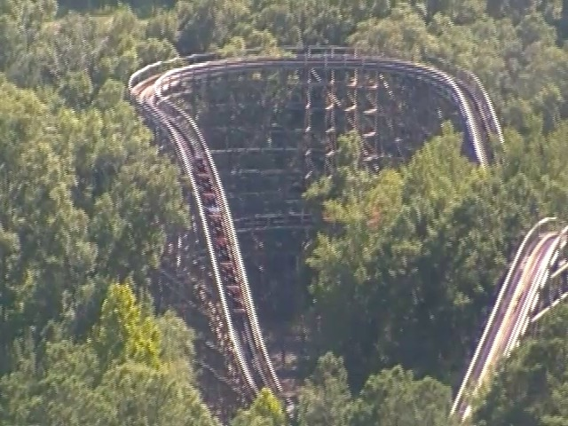

| |
Grizzly Review

We're here at Kings Dominion and todays ride we'll be reviewing is Grizzly. Oh god! Another Grizzly at a Cedar Fair park that used to be owned by Paramount! I already know how the first one turned out! Well, you're in luck. Unlike CGA's Grizzly, this ride is actually a lot of fun. OK, it's not an amazing coaster by any means. And I know some people complained that it was really rough and a peice of sh*t. And yeah. It's a bit on the rough side. But you know what? It's fun god damn it! And it's the best wooden coaster at Kings Dominion! Yep. Better than Racer 75 (Man, that ride was a dissapointment). So yeah. With all that said, let's hop in the cars, pull down the lap bars, and off we go! We roll around a turn, and just cruise through S Bend. We eventually hit the lifthill and start climbing. Not a great view. Just trees. But....you know, it's actually nice here. Got a real woodsy vibe here. This actually seems like a place where you'd see a Grizzly. Unlike CGA Grizzly, which apparently assumes that grizzly bears just like strolling down the sidewalk, amongst all the high-rise office buildings in Santa Clara, CA. Yeah. That's where you find Grizzly Bears CGA lol ;). Anyways, we eventually reach the top, and then head down the first drop. Not a huge first drop by any means, but it gives us some speed. We then head up a hill, before going around a big turn. You know, even the layout so far kind of reminds me of CGA Grizzly, if it wasn't so damn so slow. Cause...this turnaround is over relatively quickly. We drop back down, and gain our speed back. Sure, it shuffles at the bottom, but it's tolerable. Head up into a small airtime hill, and....there's actually a decent pop here. May be hard to notice with all the rattling, but it's still a lot of fun. Head into a shed. NO!!! DON'T GO INTO THE SHED!!! Bah! We don't listen, and dive right in. We shuffle a lot, and there's just this blinding moment of shuffling, rattling, and a little pop of airtime. I'm actually kind of enjoying this. We then go back into the daylight, and shuffle on through a not very steep curved hill. This honestly....feels kind of off and awkward. But hey. We still have a decent amount of speed. And though we're still shuffling like crazy, we're still gonna have fun. We dip back down, and go through what seems like a curved small airtime hill right above the tunnel. Still jackhammering, it doesn't matter as we're still having fun and getting some fun pops of airtime, and keeping some speed. Shuffle through a small airtime hill. Not much airtime, but...it's still fun. We then rise up, and go through another turn around. Right next to the one we went through at the beginning of the ride. Go through a small dip, gain a little speed back, before hopping up and over another airtime hill. No airtime, but I'm still enjoying it. Curve through another tiny little bump. Just shuffling along. And then we rise up, into the shed, and hit the brake run. So that's Grizzly. And....I can see why people wouldn't be a fan of the ride. It is a bit of the rough side. But at the same time, it's a lot of fun. It maintains its speed well, it has a couple moments of airtime, it's got a nice setting in the woods and it's got cool tunnels. Definately give it a ride if you're at Kings Dominion.
6/10
Location: Kings Dominion
Opened: 1982
Built by: Philadelphia Toboggan Coasters
Last Ridden: July 28, 2019
Grizzly Photos

Home
|